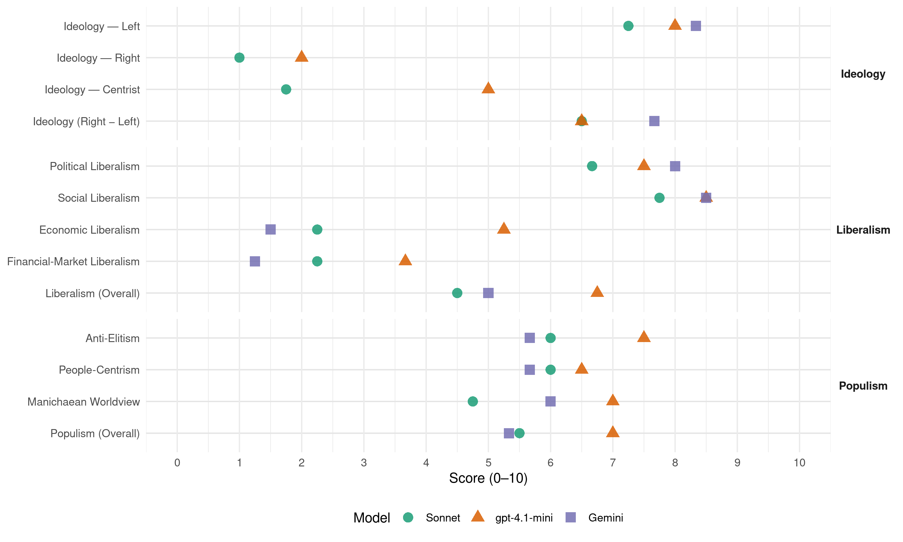

SV (Norway, 2001)
manifesto_id 12221_200109
Get full text: This site shows derived annotations and short verbatim quotes only. The full manifesto text is © Manifesto Project / WZB — obtain it via manifesto-project.wzb.eu using the manifesto_id above.
Headline scores
| Dimension | Sonnet | gpt-4.1-mini | Gemini |
|---|---|---|---|
| Populism (Overall) | 5.5 | 7.0 | 5.3 |
| Anti-Elitism | 6.0 | 7.5 | 5.7 |
| People-Centrism | 6.0 | 6.5 | 5.7 |
| Manichaean Worldview | 4.8 | 7.0 | 6.0 |
| Ideology (Right − Left) | 6.5 | 6.5 | 7.7 |
| Liberalism (Overall) | 4.5 | 6.8 | 5.0 |
| Political Liberalism | 6.7 | 7.5 | 8.0 |
| Social Liberalism | 7.8 | 8.5 | 8.5 |
| Economic Liberalism | 2.2 | 5.2 | 1.5 |
| Financial-Market Liberalism | 2.2 | 3.7 | 1.2 |
Evidence per dimension
Economic Liberalism
Gemini · score 1.0 · verified · chunk 1
“rådende markedsliberalismen med seg økt ulikhet”
Med sin uhemmede konkurranse og trang til økonomisk vekst, fører den rådende markedsliberalismen med seg økt ulikhet
Gemini · score 2.0 · verified · chunk 2
“staten skal ha større eierskap i næringslivet”
SVs målsettinger. SV VIL I PERIODEN: - arbeide for at staten skal ha større eierskap i næringslivet, blant annet gjennom statlige næringsfond. - arbeide
Gemini · score 1.0 · verified · chunk 3
“innføre ein regulert bustadmarknad på ny”
- arbeide for å innføre ein regulert bustadmarknad på ny, som ein del av ein sosial bustadpolitikk.
Gemini · score 2.0 · verified · chunk 4
“bøker skal ha ens pris”
SV VIL I PERIODEN: - arbeide for at bøker skal ha ens pris over hele landet.
gpt-4.1-mini · score 3.0 · verified · chunk 1
“Dagens markedsliberalistiske systemet må erstattes”
Dagens markedsliberalistiske systemet må erstattes av et sosialistisk samfunn der råderetten over ressursene er underlagt demokratisk styring.
gpt-4.1-mini · score 7.0 · verified · chunk 2
“marknad, konkurranse, næringsliv, privatisering, skatt, handel, regulering”
…støtte marknad, konkurranse, næringsliv, privatisering, skatt, handel, regulering…
gpt-4.1-mini · score 4.0 · verified · chunk 3
“Internasjonalisering av økonomien har ført til auka samarbeid på tvers av landegrensene mellom fagorganisasjonar, miljø- og solidaritetsrørsler”
Internasjonalisering av økonomien har ført til auka samarbeid på tvers av landegrensene mellom fagorganisasjonar, miljø- og solidaritetsrørsler. Samarbeidet er tufta på dei beste tradisjonane i arbeidarrørsla, internasjonal solidaritet og kamp mot kapitalismens utbytting av arbeidsfolk.
gpt-4.1-mini · score 7.0 · verified · chunk 4
“arbeide for å øke de statlige bevilgningene til kunst og kultur”
SV vil arbeide for å øke de statlige bevilgningene til kunst og kultur til minst en prosent av statsbudsjettet innen 2005. - arbeide for en kulturlov som sikrer hele befolkningen viktige kulturtilbud.
Sonnet · score 2.0 · verified · chunk 1
“markedsliberalistiske systemet må erstattes”
Dagens markedsliberalistiske systemet må erstattes av et sosialistisk samfunn der råderetten over ressursene er underlagt demokratisk styring.
Sonnet · score 2.0 · verified · chunk 2
“Internasjonaliseringen av økonomien er et resultat av deregulering”
Internasjonaliseringen av økonomien er et resultat av deregulering, blant annet ved fri flyt av kapital. Det fører til at makt overføres fra demokratisk valgte organer til markedet. Det er derfor viktig å gjenvinne politisk styring.
Sonnet · score 2.0 · verified · chunk 3
“Privatisering og deregulering skjer gjennom vedtak”
Internasjonaliseringa av økonomien er også eit resultat av politiske prosessar på nasjonalt nivå: Privatisering og deregulering skjer gjennom vedtak i det norske Stortinget.
Sonnet · score 3.0 · verified · chunk 4
“gå imot offentlig støtte til idrettslag som drives helkommersielt”
gå imot offentlig støtte til idrettslag som drives helkommersielt. arbeide for økt innsats mot dopingbruk
Financial-Market Liberalism
Gemini · score 1.0 · verified · chunk 1
“Finansmarkedet og bankfinansiering”
4.2 Langsiktig og stabilt eierskap 33 4.3 Finansmarkedet og bankfinansiering 34 4.4 Regional utvikling
Gemini · score 1.0 · verified · chunk 2
“svekke finanskapitalens rolle i omstruktureringen av norsk næringsliv”
langsiktig industrielt motiv. - arbeide for å svekke finanskapitalens rolle i omstruktureringen av norsk næringsliv. - arbeide for at staten øker sine
Gemini · score 1.0 · verified · chunk 3
“husbankrentene skal vere under politisk styring”
SV meiner at husbankrentene skal vere under politisk styring.
Gemini · score 2.0 · verified · chunk 4
“forbud mot kjønnsdifferensierte forsikringspremier”
full pensjon. - foreslå forbud mot kjønnsdifferensierte forsikringspremier. - foreslå at Likestillingsloven
gpt-4.1-mini · score 2.0 · verified · chunk 1
“reduser makta til dei fleirnasjonale selskapa”
9.4.1 Reduser makta til dei fleirnasjonale selskapa 69 9.4.2 Internasjonal handelspolitikk 70 9.5 EU og EØS 71 9.5.1 Det utanrikspolitiske samarbeidet med EU 72 9.5.2 EØS 72 9.5.3 Vetoretten som del av europeisk miljøpolitikk 73
gpt-4.1-mini · score 6.0 · verified · chunk 2
“finans, bank, kapital, kreditt, investering, marknad, renter, valuta”
…arbeide for at finans, bank, kapital, kreditt, investering, marknad, renter, valuta…
gpt-4.1-mini · score 3.0 · verified · chunk 3
“arbeide for at eit internasjonalt kredittilsyn skal overvake om den internasjonale finanskapitalen følgjer dei retningslinjene som blir utarbeidde av FN”
SV VIL I PERIODEN: - arbeide for at Verdsbanken og IMF blir ein del av FN-systemet. - arbeide for at eit internasjonalt kredittilsyn skal overvake om den internasjonale finanskapitalen følgjer dei retningslinjene som blir utarbeidde av FN. - arbeide for at det blir oppretta ei arbeidsgruppe for internasjonal kapitalkontroll i FN.
Sonnet · score 2.0 · verified · chunk 1
“Finansmarkedet og bankfinansiering”
4.3 Finansmarkedet og bankfinansiering — the manifesto calls for political control over the financial market and state-directed lending, opposing market-based finance.
Sonnet · score 2.0 · verified · chunk 2
“arbeide for å svekke finanskapitalens rolle”
SV VIL I PERIODEN: - arbeide for å svekke finanskapitalens rolle i omstruktureringen av norsk næringsliv. - arbeide for at staten øker sine eierandeler i forretningsbankene og de andre store finansinstitusjonene.
Sonnet · score 2.0 · verified · chunk 3
“internasjonal avgift på valutatransaksjonar”
arbeide for at det blir innført ei internasjonal avgift på valutatransaksjonar (t.d. Tobin-avgift) som gjer mange slike spekulative og kortsiktige transaksjonar ulønnsame.
Sonnet · score 3.0 · verified · chunk 4
“forbud mot kjønnsdifferensierte forsikringspremier”
foreslå forbud mot kjønnsdifferensierte forsikringspremier. foreslå at Likestillingsloven endres slik at den også gjelder statskirken
Political Liberalism
Gemini · score 8.0 · verified · chunk 1
“utvide rammene for ytringsfridom”
SV vil i perioden: - gjere framlegg om at det blir innført republikk som styreform - gjere framlegg om at stat og kyrkje skal skiljast - utvide rammene for ytringsfridom
Gemini · score 8.0 · verified · chunk 2
“erstatte diktaturet i disse statene med demokrati”
sivile samfunnet og kreftene som ønsker å erstatte diktaturet i disse statene med demokrati. Ressursmangel og miljøproblemer er sentrale
Gemini · score 8.0 · verified · chunk 3
“Demokratiske samfunnsforhold er et bidrag til fredspolitikk”
Demokratiske samfunnsforhold er et bidrag til fredspolitikk. Et demokratisk styresett øker sjansene
Gemini · score 8.0 · verified · chunk 4
“rettsvern mot diskriminering”
arbeide for å styrke rettsvern mot diskriminering. - styrke arbeidet for
gpt-4.1-mini · score 6.0 · verified · chunk 1
“utvide rammene for ytringsfridom”
SV VIL I PERIODEN: - gjere framlegg om at det blir innført republikk som styreform - gjere framlegg om at stat og kyrkje skal skiljast - utvide rammene for ytringsfridom - grunnlovfeste det kommunale sjølvstyret - arbeide for at det blir halde lokale rådgjevande folkeavrøystingar på område som har mykje å seie for lokalområdet.
gpt-4.1-mini · score 8.0 · verified · chunk 2
“demokrati, rettar, val, domstolar, media”
…skal sikre demokrati, rettar, val, domstolar, media og offentleg styring…
gpt-4.1-mini · score 8.0 · verified · chunk 3
“FN må gjøres til den sentrale rammen for globalt samarbeid om sikkerhet, miljø, økonomi og menneskerettighetsspørsmål”
Det viktigste arbeidet for internasjonal fred og sikkerhet må være å bygge ut FN til en reell forsamling for verdenssamfunnet. FN må gjøres til den sentrale rammen for globalt samarbeid om sikkerhet, miljø, økonomi og menneskerettighetsspørsmål. Organisasjonens handlefrihet og autoritet må styrkes, og en må gå mot alle tiltak som svekker FNs stilling.
gpt-4.1-mini · score 8.0 · verified · chunk 4
“demokrati, ytringsfrihet og demokrati”
NRK må videreutvikles som allmennkringkaster, med de forpliktelser det innebærer i forhold til kultur, språk, minoriteter, ytringsfrihet og demokrati. Alle allmennkringkasterne (NRK, TV2 og P4) har et stort ansvar når det gjelder å sørge for at det skal være programmer både for mindretall og flertall.
Sonnet · score 6.0 · mixed · chunk 1
“utvide rammene for ytringsfridom”
SV VIL I PERIODEN: gjere framlegg om at det blir innført republikk som styreform; gjere framlegg om at stat og kyrkje skal skiljast; utvide rammene for ytringsfridom
Sonnet · score 6.0 · verified · chunk 2
“Demokratiske samfunnsforhold er et bidrag til fredspolitikk”
Politiske ledere har skapt og brukt etniske, nasjonale og religiøse motsetninger til å hisse folk opp mot hverandre. Demokratiske samfunnsforhold er et bidrag til fredspolitikk.
Sonnet · score 7.0 · verified · chunk 3
“Demokratiske samfunnsforhold er et bidrag til fredspolitikk”
Demokratiske samfunnsforhold er et bidrag til fredspolitikk. Et demokratisk styresett øker sjansene for at de som representerer fredelige løsninger kan bli hørt og vinne fram.
Sonnet · score 7.0 · verified · chunk 4
“ytringsfrihet og demokrati”
NRK må videreutvikles som allmennkringkaster, med de forpliktelser det innebærer i forhold til kultur, språk, minoriteter, ytringsfrihet og demokrati.
Liberalism (Overall)
Gemini · score 5.0 · verified · chunk 1
“utvide rammene for ytringsfridom”
SV vil i perioden: - gjere framlegg om at det blir innført republikk som styreform - gjere framlegg om at stat og kyrkje skal skiljast - utvide rammene for ytringsfridom
Gemini · score 5.0 · verified · chunk 2
“staten skal ha større eierskap i næringslivet”
SVs målsettinger. SV VIL I PERIODEN: - arbeide for at staten skal ha større eierskap i næringslivet, blant annet gjennom statlige næringsfond. - arbeide
Gemini · score 5.0 · verified · chunk 3
“Demokratiske samfunnsforhold er et bidrag til fredspolitikk”
Demokratiske samfunnsforhold er et bidrag til fredspolitikk. Et demokratisk styresett øker sjansene
Gemini · score 5.0 · verified · chunk 4
“rettsvern mot diskriminering”
arbeide for å styrke rettsvern mot diskriminering. - styrke arbeidet for
gpt-4.1-mini · score 5.0 · verified · chunk 1
“utvide rammene for ytringsfridom”
SV VIL I PERIODEN: - gjere framlegg om at det blir innført republikk som styreform - gjere framlegg om at stat og kyrkje skal skiljast - utvide rammene for ytringsfridom - grunnlovfeste det kommunale sjølvstyret - arbeide for at det blir halde lokale rådgjevande folkeavrøystingar på område som har mykje å seie for lokalområdet.
gpt-4.1-mini · score 8.0 · verified · chunk 2
“demokrati, rettar, marknad, konkurranse, finans, bank, kapital”
…skal sikre demokrati, rettar, marknad, konkurranse, finans, bank, kapital…
gpt-4.1-mini · score 6.0 · verified · chunk 3
“FN må gjøres til den sentrale rammen for globalt samarbeid om sikkerhet, miljø, økonomi og menneskerettighetsspørsmål”
Det viktigste arbeidet for internasjonal fred og sikkerhet må være å bygge ut FN til en reell forsamling for verdenssamfunnet. FN må gjøres til den sentrale rammen for globalt samarbeid om sikkerhet, miljø, økonomi og menneskerettighetsspørsmål. Organisasjonens handlefrihet og autoritet må styrkes, og en må gå mot alle tiltak som svekker FNs stilling.
gpt-4.1-mini · score 8.0 · verified · chunk 4
“bekjempe rasisme og etnisk diskriminering på alle nivåer”
SV vil i perioden: - bekjempe rasisme og etnisk diskriminering på alle nivåer i samfunnet. - arbeide for at etniske minoriteter blir likestilt når det gjelder arbeid, bolig og utdannelse.
Sonnet · score 5.0 · mixed · chunk 1
“demokratiske prosessar skal i funksjon”
SV vil ha eit verkeleg folkestyre, eit samfunn der demokratiske prosessar skal i funksjon før viktige avgjerder blir tatt.
Sonnet · score 4.0 · verified · chunk 2
“Demokratiske samfunnsforhold er et bidrag til fredspolitikk”
Demokratiske samfunnsforhold er et bidrag til fredspolitikk. Et demokratisk styresett øker sjansene for at de som representerer fredelige løsninger kan bli hørt og vinne fram.
Sonnet · score 5.0 · mixed · chunk 3
“menneskerettane også blir respekterte her i landet”
Skal Noreg bli tatt på alvor i arbeidet sitt for internasjonale menneskerettar, krevst det at menneskerettane også blir respekterte her i landet.
Sonnet · score 5.0 · verified · chunk 4
“ytringsfrihet og demokrati”
NRK må videreutvikles som allmennkringkaster, med de forpliktelser det innebærer i forhold til kultur, språk, minoriteter, ytringsfrihet og demokrati.
Anti-Elitism
Gemini · score 8.0 · verified · chunk 1
“makta i samfunnet samla hos menneske”
I dag er mykje av makta i samfunnet samla hos menneske som ikkje er valde av folket, men som i staden får utøve makt fordi dei er eigarar eller leiarar i næringslivet
Gemini · score 3.0 · verified · chunk 2
“spekulantene vinner, på arbeidstakeres og samfunnets bekostning”
ikke en rasjonell måte å foreta nødvendige omstruktureringer i næringslivet på, men fører bare til at spekulantene vinner, på arbeidstakeres og samfunnets bekostning. Et viktig styringsvirkemiddel
Gemini · score 6.0 · verified · chunk 3
“selskapene, militærapparatet og den politiske eliten”
Amerikansk utenriks- og sikkerhetspolitikk går ikke på tvers av alliansen mellom de store selskapene, militærapparatet og den politiske eliten.
gpt-4.1-mini · score 9.0 · verified · chunk 1
“kapitalsterke selskaper øker sin makt”
Med sin uhemmede konkurranse og trang til økonomisk vekst, fører den rådende markedsliberalismen med seg økt ulikhet, en voksende klimatrussel og omfattende konsentrasjon av makt og penger. Kapitalsterke selskaper øker sin makt, og det skjer en maktforskyvning fra nasjonale demokratiske institusjoner over til et lite antall storselskaper.
gpt-4.1-mini · score 6.0 · verified · chunk 3
“den rike vestlege verda har stor politisk, økonomisk og militær makt”
Den rike vestlege verda har stor politisk, økonomisk og militær makt, og Noreg er ein del av den. I internasjonale organisasjonar og forhandlingar fremjar den vestlege delen av verda interesser som oftast er fell saman med profittinteressene til store fleirnasjonale selskap.
Sonnet · score 9.0 · verified · chunk 1
“Vi vil erstatte pengemakt med folkemakt”
SV vil bygge allianser med folk som kjemper for et bedre samfunn utenfor det parlamentariske systemet. Vi vil erstatte pengemakt med folkemakt. Dagens markedsliberalistiske systemet må erstattes
Sonnet · score 5.0 · verified · chunk 2
“Finansspekulanter kjøper seg inn i børsnoterte foretak”
Framtidig verdiskaping trues av oppkjøp motivert av et ønske om kortsiktig gevinst. Finansspekulanter kjøper seg inn i børsnoterte foretak der aksjekursen ikke gjenspeiler verdiene i foretaket.
Sonnet · score 7.0 · verified · chunk 3
“den politiske eliten”
Amerikansk utenriks- og sikkerhetspolitikk går ikke på tvers av alliansen mellom de store selskapene, militærapparatet og den politiske eliten.
Sonnet · score 3.0 · verified · chunk 4
“dei kapitalsterke får mer og mer makt”
I eit samfunn der dei kapitalsterke får mer og mer makt, må interessene til dei med minst makt støttes.
Ideology — Centrist
gpt-4.1-mini · score 5.0 · verified · chunk 1
“Folkemakt mot pengemakt”
SV vil bygge allianser med folk som kjemper for et bedre samfunn utenfor det parlamentariske systemet, som fag-, miljø-, student- og kvinnebevegelsen. Vi vil erstatte pengemakt med folkemakt.
gpt-4.1-mini · score 5.0 · verified · chunk 3
“Noreg har i dag konsultasjonar med EU og med medlemsland i Unionen om viktige utanrikspolitiske saker”
Noreg har i dag konsultasjonar med EU og med medlemsland i Unionen om viktige utanrikspolitiske saker. Slike konsultasjonar skjer til dømes før viktige røystingar i FN, og har lenge vist seg å vere særs nyttige. Samtidig står Noreg utanfor den felles utanriks- og tryggingspolitikken som EU prøver å få til.
Sonnet · score 1.0 · verified · chunk 1
“folkemakt mot pengemakt”
The title FOLKEMAKT MOT PENGEMAKT frames a people-vs-elite appeal, but it is firmly anchored in left-wing socialist ideology rather than centrist populism.
Sonnet · score 2.0 · verified · chunk 2
“folk bor, innenfor rammene av en bærekraftig utvikling”
Det overordnede målet for SVs næringspolitikk er å skape arbeidsplasser der folk bor, innenfor rammene av en bærekraftig utvikling.
Sonnet · score 2.0 · verified · chunk 3
“folkefleirtalet både i rike og fattige land”
Vårt val står mellom å vere ein lojal støttespelar for mektige vestlege kapitalinteresser eller å føre ein politikk som folkefleirtalet både i rike og fattige land har fordelar av.
Sonnet · score 2.0 · verified · chunk 4
“interessene til dei med minst makt støttes”
I eit samfunn der dei kapitalsterke får mer og mer makt, må interessene til dei med minst makt støttes.
Ideology — Left
Gemini · score 9.0 · verified · chunk 1
“samfunn uten klasseskiller og sosial urettferdighet”
SV er et sosialistisk parti med en visjon om et samfunn uten klasseskiller og sosial urettferdighet. Vi tar derfor sikte på
Gemini · score 8.0 · verified · chunk 2
“Næringslivet har sterke innslag av finans- og spekulasjonskapital”
bidra til bosetting i hele landet. Næringslivet har sterke innslag av finans- og spekulasjonskapital, og store deler av næringsvirksomheten er
Gemini · score 8.0 · verified · chunk 3
“motmakt mot den verdsomspennande kapitalismen”
Oljemilliardar kan også brukast til å byggje opp fagleg motmakt mot den verdsomspennande kapitalismen.
gpt-4.1-mini · score 9.0 · verified · chunk 1
“et samfunn uten klasseskiller og sosial urettferdighet”
SV er et sosialistisk parti med en visjon om et samfunn uten klasseskiller og sosial urettferdighet. Vi tar derfor sikte på en grunnleggende endring av samfunnet.
gpt-4.1-mini · score 7.0 · verified · chunk 3
“kamp mot fattigdom, undertrykking, valdelege konfliktar og miljøøydelegging”
Målet for SV er ei verd der sosiale, økonomiske og kulturelle gode er rettferdig fordelte. Det er ei verd der sterke regionale og globale organisasjonar på demokratisk vis løyser felles problem. Noreg må føre ein aktiv utanrikspolitikk med vekt på styrking av FN, auka hjelp til fattige land og større ansvar for menneske på flukt. Dei største utfordringane verdssamfunnet står framfor er å kjempe mot fattigdom, undertrykking, valdelege konfliktar og miljøøydelegging; og å styrke folkeleg styring og medverknad.
Sonnet · score 9.0 · verified · chunk 1
“sosialistisk samfunn der råderetten over ressursene”
Dagens markedsliberalistiske systemet må erstattes av et sosialistisk samfunn der råderetten over ressursene er underlagt demokratisk styring.
Sonnet · score 7.0 · verified · chunk 2
“arbeide for å svekke finanskapitalens rolle”
SV VIL I PERIODEN: - arbeide for å svekke finanskapitalens rolle i omstruktureringen av norsk næringsliv.
Sonnet · score 8.0 · verified · chunk 3
“motmakt til den verdsomspennande kapitalismen”
Ei sterk og godt utbygd fagrørsle er ei motmakt til den verdsomspennande kapitalismen, og viktig for at økonomisk vekst skal komme folk flest til gode.
Sonnet · score 5.0 · verified · chunk 4
“feminisering av fattigdom, trusselen mot velferdsstaten”
fokusere spesielt på feminisering av fattigdom, trusselen mot velferdsstaten, menns vold mot kvinner, og skjønnhetstyranniet.
Ideology (Right − Left)
Gemini · score 8.0 · verified · chunk 1
“erstatte pengemakt med folkemakt”
Vi vil erstatte pengemakt med folkemakt. Dagens markedsliberalistiske systemet må erstattes av et sosialistisk samfunn
Gemini · score 7.0 · verified · chunk 2
“Næringslivet har sterke innslag av finans- og spekulasjonskapital”
bidra til bosetting i hele landet. Næringslivet har sterke innslag av finans- og spekulasjonskapital, og store deler av næringsvirksomheten er
Gemini · score 8.0 · verified · chunk 3
“motmakt mot den verdsomspennande kapitalismen”
Oljemilliardar kan også brukast til å byggje opp fagleg motmakt mot den verdsomspennande kapitalismen.
gpt-4.1-mini · score 7.0 · verified · chunk 1
“Folkemakt mot pengemakt”
SV vil bygge allianser med folk som kjemper for et bedre samfunn utenfor det parlamentariske systemet, som fag-, miljø-, student- og kvinnebevegelsen. Vi vil erstatte pengemakt med folkemakt.
gpt-4.1-mini · score 6.0 · verified · chunk 3
“Noreg må føre ein aktiv utanrikspolitikk med vekt på styrking av FN, auka hjelp til fattige land og større ansvar for menneske på flukt”
Målet for SV er ei verd der sosiale, økonomiske og kulturelle gode er rettferdig fordelte. Det er ei verd der sterke regionale og globale organisasjonar på demokratisk vis løyser felles problem. Noreg må føre ein aktiv utanrikspolitikk med vekt på styrking av FN, auka hjelp til fattige land og større ansvar for menneske på flukt.
Sonnet · score 9.0 · verified · chunk 1
“SV er et sosialistisk parti”
SV er et sosialistisk parti med en visjon om et samfunn uten klasseskiller og sosial urettferdighet.
Sonnet · score 6.0 · verified · chunk 2
“arbeide for å svekke finanskapitalens rolle”
SV VIL I PERIODEN: - arbeide for å svekke finanskapitalens rolle i omstruktureringen av norsk næringsliv.
Sonnet · score 7.0 · verified · chunk 3
“kamp mot kapitalismens utbytting av arbeidsfolk”
Samarbeidet er tufta på dei beste tradisjonane i arbeidarrørsla, internasjonal solidaritet og kamp mot kapitalismens utbytting av arbeidsfolk.
Sonnet · score 4.0 · verified · chunk 4
“feminisering av fattigdom, trusselen mot velferdsstaten”
fokusere spesielt på feminisering av fattigdom, trusselen mot velferdsstaten, menns vold mot kvinner, og skjønnhetstyranniet.
Ideology — Right
gpt-4.1-mini · score 2.0 · verified · chunk 1
“reduser makta til dei fleirnasjonale selskapa”
9.4.1 Reduser makta til dei fleirnasjonale selskapa 69 9.4.2 Internasjonal handelspolitikk 70 9.5 EU og EØS 71 9.5.1 Det utanrikspolitiske samarbeidet med EU 72 9.5.2 EØS 72 9.5.3 Vetoretten som del av europeisk miljøpolitikk 73
gpt-4.1-mini · score 2.0 · verified · chunk 3
“Noreg bør derfor ikkje støtte ein slik styrkeoppbygging i Europa, og heller ikkje knytte sitt forsvar til ein eventuell militærstruktur innanfor EU”
Det er ikkje behov for ytterlegare militær styrkeoppbygging i Europa. Hvis denne styrken i tillegg blir brukt for å ta vare på EUs interesser, kan det skape konfliktar i forhold til andre europeiske land. Noreg bør derfor ikkje støtte ein slik styrkeoppbygging i Europa, og heller ikkje knytte sitt forsvar til ein eventuell militærstruktur innanfor EU.
Sonnet · score 1.0 · verified · chunk 1
“Flyktningpolitikk”
9.8 Flyktningpolitikk — the manifesto addresses refugee policy but from a pro-rights, inclusive perspective, not a restrictive nationalist one.
Sonnet · score 1.0 · verified · chunk 2
“sikre at vi beholder industriell kompetanse i Norge”
Et variert og dermed robust næringsliv må sikre at vi beholder industriell kompetanse i Norge.
Sonnet · score 1.0 · verified · chunk 3
“arbeide mot norsk medlemskap i EU”
SV VIL I PERIODEN: - arbeide mot norsk medlemskap i EU.
Sonnet · score 1.0 · verified · chunk 4
“fremme tiltak som forebygger at norsk språk”
fremme tiltak som forebygger at norsk språk, bokmål og nynorsk, trues som bruksspråk og fagspråk på viktige områder.
Manichaean Worldview
Gemini · score 7.0 · verified · chunk 1
“preget av en tøylesløs kapitalisme”
Vår tid er preget av en tøylesløs kapitalisme. Med sin uhemmede konkurranse og trang til økonomisk vekst
Gemini · score 5.0 · verified · chunk 3
“lojal støttespelar for mektige vestlege kapitalinteresser”
Vårt val står mellom å vere ein lojal støttespelar for mektige vestlege kapitalinteresser eller å føre ein politikk som folkefleirtalet
gpt-4.1-mini · score 8.0 · verified · chunk 1
“Folkemakt mot pengemakt”
SV vil bygge allianser med folk som kjemper for et bedre samfunn utenfor det parlamentariske systemet, som fag-, miljø-, student- og kvinnebevegelsen. Vi vil erstatte pengemakt med folkemakt.
gpt-4.1-mini · score 6.0 · verified · chunk 3
“Vårt val står mellom å vere ein lojal støttespelar for mektige vestlege kapitalinteresser eller å føre ein politikk som folkefleirtalet både i rike og fattige land har fordelar av”
Opp mot desse mektige interessene står ønskjet om ei meir rettferdig, fredeleg og demokratisk verd. Vårt val står mellom å vere ein lojal støttespelar for mektige vestlege kapitalinteresser eller å føre ein politikk som folkefleirtalet både i rike og fattige land har fordelar av. Dersom problema med miljøet, ressursforvaltning og fattigdommen skal løysast, og dersom vi skal greie å hindre krig og konfliktar, må vi solidarisere oss med dei fattige og undertrykte.
Sonnet · score 8.0 · verified · chunk 1
“tøylesløs kapitalisme”
Vår tid er preget av en tøylesløs kapitalisme. Med sin uhemmede konkurranse og trang til økonomisk vekst, fører den rådende markedsliberalismen med seg økt ulikhet
Sonnet · score 3.0 · verified · chunk 2
“Fortjeneste er overordnet hensynet til sosial nytte”
Næringslivet har sterke innslag av finans- og spekulasjonskapital, og store deler av næringsvirksomheten er overlatt til markedet. Fortjeneste er overordnet hensynet til sosial nytte, arbeidstakernes interesser og miljø.
Sonnet · score 6.0 · verified · chunk 3
“lojal støttespelar for mektige vestlege kapitalinteresser”
Vårt val står mellom å vere ein lojal støttespelar for mektige vestlege kapitalinteresser eller å føre ein politikk som folkefleirtalet både i rike og fattige land har fordelar av.
Sonnet · score 2.0 · verified · chunk 4
“Rasistar ser på systematiske overgrep”
Rasistar ser på systematiske overgrep mot menneske frå etniske, religiøse og kulturelle minoritetar som ei rettferdig handling.
People-Centrism
Gemini · score 8.0 · verified · chunk 1
“erstatte pengemakt med folkemakt”
Vi vil erstatte pengemakt med folkemakt. Dagens markedsliberalistiske systemet må erstattes av et sosialistisk samfunn
Gemini · score 4.0 · verified · chunk 2
“eiendomsretten overføres til folkestyrte organer på lokalt nivå”
I denne sammenhengen må eiendomsretten overføres til folkestyrte organer på lokalt nivå. Det er folk i distriktene som er avhengige
Gemini · score 5.0 · verified · chunk 3
“overføre makt fra marknaden til folket”
I tillegg må ein arbeide gjennom dei demokratiske institusjonane i nasjonalstatane for å overføre makt fra marknaden til folket.
gpt-4.1-mini · score 8.0 · verified · chunk 1
“Folkemakt mot pengemakt”
SV vil bygge allianser med folk som kjemper for et bedre samfunn utenfor det parlamentariske systemet, som fag-, miljø-, student- og kvinnebevegelsen. Vi vil erstatte pengemakt med folkemakt.
gpt-4.1-mini · score 5.0 · verified · chunk 3
“ønskjet om ei meir rettferdig, fredeleg og demokratisk verd”
Opp mot desse mektige interessene står ønskjet om ei meir rettferdig, fredeleg og demokratisk verd. Vårt val står mellom å vere ein lojal støttespelar for mektige vestlege kapitalinteresser eller å føre ein politikk som folkefleirtalet både i rike og fattige land har fordelar av.
Sonnet · score 9.0 · verified · chunk 1
“eit verkeleg folkestyre”
SV vil ha eit verkeleg folkestyre, eit samfunn der demokratiske prosessar skal i funksjon før viktige avgjerder blir tatt.
Sonnet · score 4.0 · verified · chunk 2
“spekulantene vinner, på arbeidstakeres og samfunnets bekostning”
Slike oppkjøp er ikke en rasjonell måte å foreta nødvendige omstruktureringer i næringslivet på, men fører bare til at spekulantene vinner, på arbeidstakeres og samfunnets bekostning.
Sonnet · score 7.0 · verified · chunk 3
“komme folk flest til gode”
Ei sterk og godt utbygd fagrørsle er ei motmakt til den verdsomspennande kapitalismen, og viktig for at økonomisk vekst skal komme folk flest til gode.
Sonnet · score 4.0 · verified · chunk 4
“folk flest tilgang til dei største”
arbeide for å sikre folk flest tilgang til dei største kultur- og idrettsbegivenhetene via allmenne, riksdekkende TV-kanaler.
Populism (Overall)
Gemini · score 8.0 · verified · chunk 1
“erstatte pengemakt med folkemakt”
Vi vil erstatte pengemakt med folkemakt. Dagens markedsliberalistiske systemet må erstattes av et sosialistisk samfunn
Gemini · score 3.0 · verified · chunk 2
“spekulantene vinner, på arbeidstakeres og samfunnets bekostning”
ikke en rasjonell måte å foreta nødvendige omstruktureringer i næringslivet på, men fører bare til at spekulantene vinner, på arbeidstakeres og samfunnets bekostning. Et viktig styringsvirkemiddel
Gemini · score 5.0 · verified · chunk 3
“overføre makt fra marknaden til folket”
I tillegg må ein arbeide gjennom dei demokratiske institusjonane i nasjonalstatane for å overføre makt fra marknaden til folket.
gpt-4.1-mini · score 8.0 · verified · chunk 1
“Folkemakt mot pengemakt”
SV vil bygge allianser med folk som kjemper for et bedre samfunn utenfor det parlamentariske systemet, som fag-, miljø-, student- og kvinnebevegelsen. Vi vil erstatte pengemakt med folkemakt.
gpt-4.1-mini · score 6.0 · verified · chunk 3
“Opp mot desse mektige interessene står ønskjet om ei meir rettferdig, fredeleg og demokratisk verd”
Opp mot desse mektige interessene står ønskjet om ei meir rettferdig, fredeleg og demokratisk verd. Vårt val står mellom å vere ein lojal støttespelar for mektige vestlege kapitalinteresser eller å føre ein politikk som folkefleirtalet både i rike og fattige land har fordelar av.
Sonnet · score 9.0 · verified · chunk 1
“FOLKEMAKT MOT PENGEMAKT”
FOLKEMAKT MOT PENGEMAKT SOSIALISTISK VENSTREPARTIS ARBEIDSPROGRAM 2001-2005 SV er et sosialistisk parti med en visjon om et samfunn uten klasseskiller og sosial urettferdighet.
Sonnet · score 4.0 · verified · chunk 2
“Finansspekulanter kjøper seg inn i børsnoterte foretak”
Framtidig verdiskaping trues av oppkjøp motivert av et ønske om kortsiktig gevinst. Finansspekulanter kjøper seg inn i børsnoterte foretak der aksjekursen ikke gjenspeiler verdiene i foretaket.
Sonnet · score 6.0 · verified · chunk 3
“overføre makt frå marknaden til folket”
ein må arbeide gjennom dei demokratiske institusjonane i nasjonalstatane for å overføre makt frå marknaden til folket.
Sonnet · score 3.0 · verified · chunk 4
“dei kapitalsterke får mer og mer makt”
I eit samfunn der dei kapitalsterke får mer og mer makt, må interessene til dei med minst makt støttes.
Social Liberalism